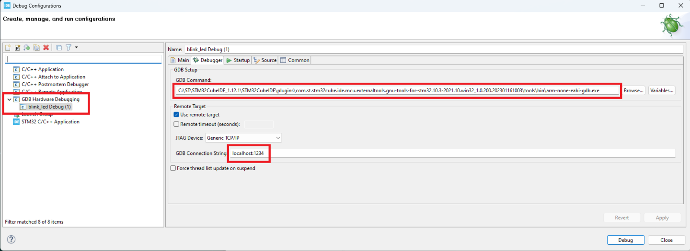

6.3.1 arm-gdb Debug
With debug support enabled you can use arm-none-eabi-gdb (or gdb-multiarch) to debug the code used in the simulator.
Use arm-none-eabi-gdb with the .elf file as the parameter:
arm-none-eabi-gdb compiled_file.elf
and the command below to connect (1234 is the default port):
target extended-remote localhost:1234
Graphic debug mode can be made using eclipse IDE with Eclipse Embedded CDT or using platformIO in VSCode, just add the configuration lines below in the project’s platformio.ini file:
upload_protocol = custom upload_command = C:\"Program Files"\PicsimLab\picsimlab_tool.exe loadbin "$BUILD_DIR/firmware.bin" ;upload_command = /usr/bin/picsimlab_tool loadbin "$BUILD_DIR/firmware.bin" build_type = debug debug_tool = custom debug_port = localhost:1234 debug_build_flags = -O2 -g debug_init_break = tbreak main debug_init_cmds = define pio_reset_halt_target monitor system_reset end define pio_reset_run_target monitor system_reset end target extended-remote $DEBUG_PORT $LOAD_CMDS pio_reset_halt_target $INIT_BREAK
It’s possible to configure STM32CubeIDE to connect and debug using PICSimLab:
